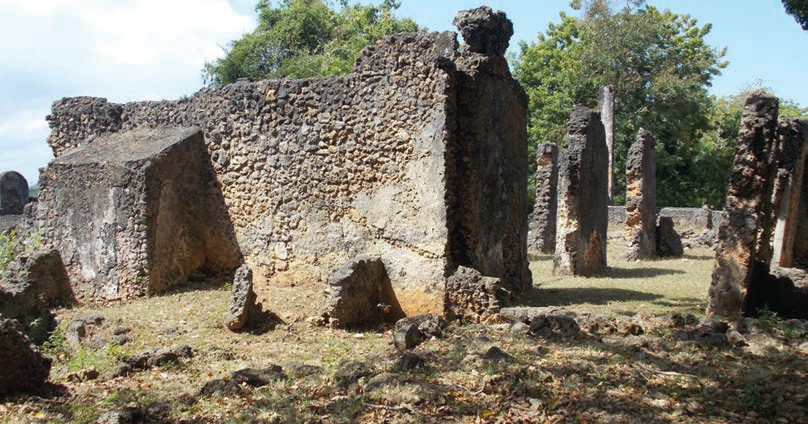

Kielelezo namba 5: Magofu ya mji wa Tongoni, Tanga
Pia, eneo la Kunduchi lililopo Dar-es-salaam lina mabaki ya mji uliotumiwa na wafanyabiashara hao (chunguza Kielelezo namba 6).

Kielelezo namba 6: Magofu ya mji wa Kunduchi, Dar es salaam
Historia ya Tanzania na Maadili STD 3 PB Final.indd 29
29/11/2024 17:14